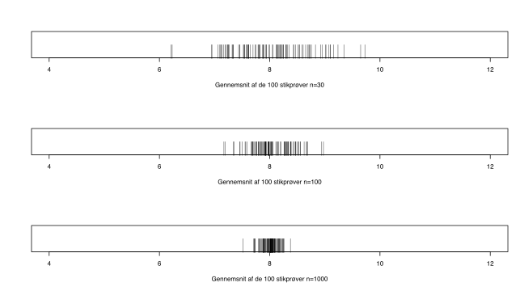

Kapitel 12 Parametre og parameter-estimater
12.0.0.1 Stikprøvefordelingen
12.0.0.2 Stikprøvefordelingen 2
12.0.0.3 Parameter-estimat
Når man indsamler en stikprøve fx 100 studerendes højde, kan vi bruge denne stikprøve til at sige noget om alle studerendes højde. I dette tilfælde er alle studerende, det vi kalder populationen, det er dem vi ønsker at vide noget om. Den gennemsnitlige højde i populationen er den ukendte parameter \(\mu\). Den gennemsnitlige højde på de studerende i stikprøven kalder vi parameterestimatet, estimatet betyder vores gæt på den ukendte sande gennemsnitlige højde på alle studerende, altså parameteren \(\mu\). Vi bruger betegnelsen \(\hat{\mu}\), når vi taler om paramterestimater, så vores gæt angiver vi med en hat \(\hat{}\). Da paramterestimatet er et gæt, er vi interesserede i kvaliteten af vort gæt. Vi ser nedenfor på stikprøvefordelingen, som vi kan bruge til at måle præcision af estimatet ved hjælp af konfidensintervaller.
12.0.1 Parameter-estimat for middelværdi
Hvis vi ønsker at udtale os om det gennemsnitlige daglige afkast af Tryg aktien den sande middelværdi \(latex \mu\), kan vi estimere det gennemsnitlige afkast i populationen, ved gennemsnittet i stikprøven $ {x}$.
\[\hat{\mu}=\bar{x}=\frac{\sum_1^n (x_i)}{n}=\frac{30.0111}{386}=0.0777\]
12.0.2 Parameter-estimat for standardafvigelsen
Vi har nævnt at standardafvigelsen af afkastet, er en vigtig faktor, når en investor skal bestemme volatiliteten i en aktie. Vi kan estimere den sande standardafvigelse i populationen \(\sigma\), ud fra estimatet af standardafvigelsen \(\hat{\sigma}\) vha. stikprøven. For Tryg aktien regnes dette ud som:
\[Parameteren\ \sigma\ estimeres\ ved\ \hat{\sigma}=S=\sqrt[]{\frac{\sum_1^n (x_i-\bar{x})^2}{n-1}}=\sqrt[]{\frac{374.395}{386-1}}=0.99\]
Nedenfor er en oversigt over vigtige parametre samt deres estimater. Vi er udover estimatet interesseret i, hvor sikre vi er på dette estimat, her er det vi vil benytte konfidensintervaller.
| Parameter | Estimat | Beregning af estimatet |
|---|---|---|
| \(Andelen\ p\) | \(\hat{p}\) | \(\hat{p}=\frac{x}{n}=\frac{antal\ succeser}{antal\ trials}\) |
| \(Middel\ \mu\) | \(\hat{\mu}\) | \(\hat{\mu}=\bar{x}=\frac{\sum_1^n (x_i)}{n}\) |
| \(Variansen\ \sigma^2\) | \(\hat{\sigma}^2\ eller \ s^2\) | \(s^2=\frac{\sum_1^n (x_i-\bar{x})^2}{n-1}\) |
| \(Spredningen\ \sigma\) | \(\hat{\sigma}\ eller \ s\) | \(s=\sqrt[]{\frac{\sum_1^n (x_i-\bar{x})^2}{n-1}}\) |
12.0.3 Data- stikprøve- og populationsfordelingen
Vi sondrer mellem flere forskellige typer af fordelinger.
Populations fordelingen af størrelse N. Denne er ikke kendt, men vi ønsker at drage slutninger om fordelingen, baseret på en stikprøve.
Datafordeligen er fordelingen af den stikprøve af størrelse n, vi har indsamlet.
Stikprøve fordelingen fremkommer, hvis man fra populationen, udtager alle stikprøver, af størrelse n. Fordelingen af parameter estimaterne kaldes stikprøve fordelingen.
 Vi forestiller os nu at Finanstilsynet, ønsker at estimere det gennemsnitlige indestående på danskernes nem konti. Den ukendte populations parameter Finanstilsynet er interesseret er altså \(\mu\). Her er populationen samtlige nem konti, hvis der er fx. er 3 mio konti er N altså 3 mio. Vi ved at der i populationen, vil være personer med meget store indståender på deres konti, nok flere mio. DKK. og nogle konti med negativt indestående. Sandsynligvis vil standard afvigelsen \(\sigma\) være stor. Vi kan formode at fordelingen vil være højreskæv, i en eller anden grad, da der vil være enkelte ekstremt store indeståender der danner en lang hale mod højre.
Vi forestiller os nu at Finanstilsynet, ønsker at estimere det gennemsnitlige indestående på danskernes nem konti. Den ukendte populations parameter Finanstilsynet er interesseret er altså \(\mu\). Her er populationen samtlige nem konti, hvis der er fx. er 3 mio konti er N altså 3 mio. Vi ved at der i populationen, vil være personer med meget store indståender på deres konti, nok flere mio. DKK. og nogle konti med negativt indestående. Sandsynligvis vil standard afvigelsen \(\sigma\) være stor. Vi kan formode at fordelingen vil være højreskæv, i en eller anden grad, da der vil være enkelte ekstremt store indeståender der danner en lang hale mod højre.
Hvis vi simpelt tilfældigt udvælger en stikprøve på n=10000, vil gennemsnittet \(\bar{x}\) (som jo er parameterestimatet \(\hat{\mu}\)) i stikprøven udviske outliers.
Hvis man udtog alle mulige stikprøver af populationen og beregnede samtlige gennemsnit, ville disse gennemsnit ligge ganske tæt omkring den sande parameter \(\mu\). Denne sandsynlighedsfordeling af stikprøve gennemsnit er stikprøvefordelingen Vi kan med den centrale grænseværdisætning vise at stikprøvefordelingen vil være approximativt normal med middelværdi \(\mu\) og standardafvigelse \(\frac{\sigma}{\sqrt[]{10000}}\). Standardafvigelsen for stikprøvefordelingen vil være 100 gange mindre, end standardafvigelsen for populationen. Bemærk havde stikprøven været på n=100 i stedet, ville standard afvigelsen for stikprøvefordelingen kun være \(\sqrt[]{100}=10\) gange mindre end standard afvigelsen for populationen.
12.0.4 Den centrale grænseværdisætning CLT
Den centrale grænseværdisætning CLT siger, at hvis man med tilbagelægning udtager tilstrækkeligt store stikprøver af størrelse n af en population, vil stikprøvefordelingen af middelværdien være approximativt normal. Er populationsfordelingen hverken symmetrisk eller mesokurtisk vil stikprøve fordelingen stadig være tilnærmelsesvist normal, når blot stikprøve størrelsen er tilstrækkelig stor (mange bøger sætter denne grænse ved 30).
Nedenfor har vi en højreskæv populationsfordeling med \(\mu=8\) og \(\sigma=4\), dette er jo den sædvanligvis ukendte population, fra hvilken vi trækker en stikprøve på størrelse n.

Middelværdien for stikprøvefordelingen skrives i mange bøger med notationen \(\mu_{\bar{X}}\) er: \[\mu_{\bar{X}}=\mu\]
Standardafvigelsen for stikprøvefordelingen kaldes standardfejlen for middelværdien (engelsk standard error of the mean SEM eller SE) \(\sigma_{\bar{X}}\) er:
\[SEM=\sigma_{\bar{X}}=\frac{\sigma}{\sqrt[]{n}}\]
Vi bruger standardfejlen for middelværdien SEM til at beregne konfidensintervaller som vi ser på senere. Der gælder jo mindre SEM jo smallere konfidensinterval, og når stikprøvestørrelsen bliver større bliver SEM mindre. Det giver jo god mening, større stikprøve giver mindre SEM og dermed smallere konfidensinterval dvs. større præcision.
På figurerne er udtaget 3 gange 100 stikprøver af størrelse n hhv. 30, 100 og 1000. På hver figur er gennemsnittene af de 100 stikprøver angivet. Der er altså 100 pinde i hvert diagram. Bemærk CLT siger at for alle tre stikprøvefordelinger er \(\mu=8\), det ses af figurerne at gennemsnittene i stikprøverne er centreret omkring middelværdien i populationen \(\mu=8\).
Vi kan ligeledes se at variationen falder (stikprøvegennemsnittene ligger mere snævert), når stikprøvestørrelsen vokser.

På de 3 figurer nedenfor ses de tilsvarende stikprøvefordelinger.
Når stikprøvestørrelsen er n=30, kan standard fejlen da \(\sigma=4\) jvf. CLT udregnes til:
\[SEM=\sigma_{\bar{X}}=\frac{\sigma}{\sqrt[]{n}}=\frac{4}{\sqrt[]{30}}=0.73\]

Når stikprøvestørrelsen er n=100, kan standard fejlen da \(\sigma=4\) jvf. CLT udregnes til:
\[SEM=\sigma_{\bar{X}}=\frac{\sigma}{\sqrt[]{n}}=\frac{4}{\sqrt[]{100}}=0.4\]

Når stikprøvestørrelsen er n=1000, kan standard fejlen da \(\sigma=4\) jvf. CLT udregnes til:
\[SEM=\sigma_{\bar{X}}=\frac{\sigma}{\sqrt[]{n}}=\frac{4}{\sqrt[]{1000}}=0.13\]

Da stikprøvefordelingerne er normalfordelte, ved vi at hvis man trækker 1.96 gange standard fejlen SEM \(\frac{\sigma}{\sqrt[]{n}}\) fra middelværdien \(\mu\) og lægger 1.96 gange SEM \(\frac{\sigma}{\sqrt[]{n}}\) til middelværiden \(\mu\), er der i hver hale 2.5% og imellem halerne 95% af sandsynligheden. Vi kan altså beregne følgende nedre og øvre intervalgrænser for de tre stikprøvefordelinger, jo større stikprøve jo smallere interval.
Vi udregner nedre intervalgrænse når n er 30 som:
\(\mu-1.96\cdot\frac{\sigma}{\sqrt[]{n}}=8-1.96\cdot\frac{4}{\sqrt[]{30}}=6.57\)
Vi udregner øvre intervalgrænse når n er 30 som:
\(\mu+1.96\cdot\frac{\sigma}{\sqrt[]{n}}=8+1.96\cdot\frac{4}{\sqrt[]{30}}=9.43\)

Vi udregner nedre intervalgrænse når n er 100 som:
\(\mu-1.96\cdot\frac{\sigma}{\sqrt[]{n}}=8-1.96\cdot\frac{4}{\sqrt[]{100}}=7.22\)
Vi udregner øvre intervalgrænse når n er 100 som:
\(\mu+1.96\cdot\frac{\sigma}{\sqrt[]{n}}=8+1.96\cdot\frac{4}{\sqrt[]{100}}=8.78\)

Vi udregner nedre intervalgrænse når n er 1000 som:
\(\mu-1.96\cdot\frac{\sigma}{\sqrt[]{n}}=8-1.96\cdot\frac{4}{\sqrt[]{1000}}=7.75\)
Vi udregner øvre intervalgrænse når n er 1000 som:
\(\mu+1.96\cdot\frac{\sigma}{\sqrt[]{n}}=8+1.96\cdot\frac{4}{\sqrt[]{1000}}=8.25\)

12.1 Frihedsgrader
Frihedsgrader eller degrees of freedom df betyder, hvor mange observationer kan variere frit. Hvis man fx. har en stikprøve med 4 observationer \({1,2,2,3}\) og ønsker at estimere (gætte på) gennemsnittet i populationen \(\mu\), så bliver vores bedste estimat for (gæt på) gennemsnittet \(\hat{\mu}=\bar{x}=\frac{1+2+2+3}{4}=\frac{8}{4}=2\). Her er antallet af observationer, der kan variere frit, når gennemsnittet \(\bar{x}=2\) er givet \(4-1=3\), hvilket er antallet af frihedsgrader. Hvis de 3 første observationer er \({1,2,2}\), vil den sidste observation være givet som 3, for at gennemsnittet bliver 2. Havde vi haft de 3 første observationer var \({1,1,1}\) ville den sidste observation være givet som 5 for at gennemsnittet var 2. Ved 4 observationer, er der således \(4-1=3\) frihedsgrader, ved 10 observationer, er der således \(10-1=9\) frihedsgrader osv. Antallet af frihedsgrader når vi estimerer middelværdien, svarer til antallet af observationer i stikprøven n minus 1.
12.2 t-fordelingen
Useendet af t-fordelinger bestemmes af parameteren antal frihedsgrader. Samtlige t-fordelinger har middelværdi \(\mu=0\) og approximerer/tilnærmer sig standard normalfordelingen, når antallet af frihedsgrader vokser. Vi benytter populært sagt t-fordelinger i stedet for z-fordelinger, når populations variansen \(\sigma^2\) er ukendt. Antallet af frihedsgrader for t-fordelingen, ved konfidensinterval for middelværdi, svarer til antallet af observationer i stikprøven n minus 1.
I figuren er indtegnet 3 t-fordelinger med hhv. 5, 10 og 100 frihedsgrader (df degrees of fredom). Vi kan se fordelingerne har tykkere haler end normalfordelingen og når antallet at frihedsgrader er 100 ser z- og t-fordelingen næsten identiske ud.